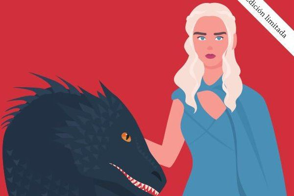

class="evento">
Presentación y Firma: "Ahora o nunca" de Arancha Ruiz
Granada
El 11 de Marzo a las 19h
Las oportunidades de éxito están al alcance de todos quienes desarrollen estas 3 habilidades imprescindibles para el profesional del siglo XXI: aprender de forma constante, tejer una red de colaboradores y ser perseverantes.
Seguro que en alguna ocasión has presentido que te hallabas ante una buena oportunidad, pero no fuiste a por ella. Pero no es momento para lamentaciones.
Firma: "El chico del ukelele" de David Rees
Valencia
El 3 de Abril a las 17h

¿El amor por internet es peligroso?
¿Debería estudiar algo que no tiene salida?
¿Qué piensan los demás de mí?
¿Realmente me gustan las chicas?
¿Qué hago en una cueva perdido y sin salida?
¿Me van a pegar a la salida de clase?
¿Cómo salvo a mi hermana de una caída de 6 metros?
¿Mis amigos me odian?
¿El ukelele me ayudará a escribir mi primera canción?
El chico del ukelele es un tierno y sorprendente libro de cuentos en el que David Rees nos muestra su percepción.
Presentación y Firma: "De vacaciones por los Siete Reinos" Vol 2
Barcelona
Junio de 2020

Alguna vez has querido perderte por los reinos imaginarios de Poniente y por aquellas ciudades libres o tierras de los dothrakis? De vacaciones por los Siete Reinos. Vol. 2 te dará el pasaporte para que puedas viajar a Rocadragón, Desembarco del Rey, Braavos, Meereen o Altojardín en busca de Daenerys Targaryen, Jon Nieve, Jaime Lannister o Arya Stark
En la actualidad, existe un nuevo concepto emergente llamado Turismo de Cine y Series, el cual define la actividad de ocio ligada a la visita de las localizaciones visionadas en el cine y la televisión. Descubrir y redescubrir un paisaje, ciudad o monumento a través de la pantalla, siguiendo las huellas de aquellos personajes favoritos que nos cautivan a todos a lo largo de la vida es algo mágico y gratificante cada vez más habitual hoy día.
Jaume Palau, diplomado en Turismo y experto en rutas de cine. Lleva desde el año 2000 recorriendo mundo en búsqueda de escenarios que hayan aparecido en la gran y pequeña pantalla. Es el autor de Licencia para viajar. Guía definitiva de viajes por el mundo de 007 y De vacaciones por los Siete Reinos. Vol I. Es también cofundador de la asociación cultural España de Cine y creador de la exposición Tras las huellas de nuestros héroes. De Turismo por el Cine y las Series.